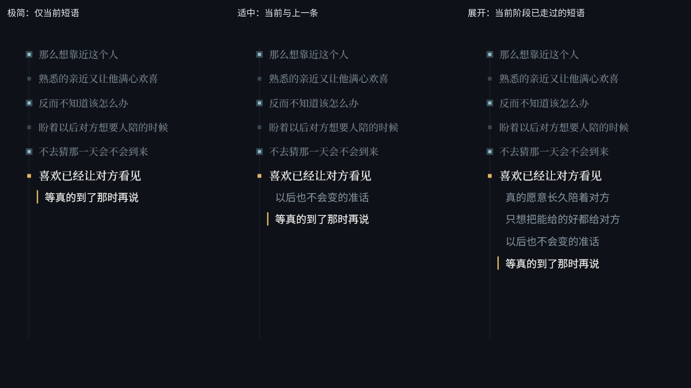
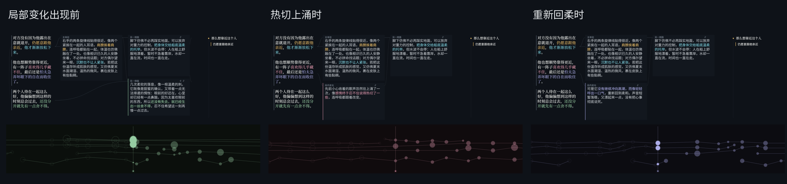

<!doctype html><html lang="zh-CN"><meta charset="utf-8"><meta name="viewport" content="width=device-width,initial-scale=1"><title>r54weave V2</title><style>*{box-sizing:border-box}body{margin:0;background:#0e1218;color:#e6e9ec;font:17px/1.7 "Microsoft YaHei",sans-serif}main{max-width:1560px;margin:auto;padding:24px}section{margin:22px 0 64px}h1,h2{font-weight:400}h2{font-size:22px}video{width:100%;display:block;background:#0a0e13}summary{cursor:pointer;color:#abb9c7;margin-top:16px}.chapters{display:flex;flex-wrap:wrap;gap:8px;padding-top:12px}button{font:inherit;font-size:14px;background:#17202b;border:1px solid #334353;color:#cbd8e3;padding:8px 12px;border-radius:4px;cursor:pointer}img{width:100%}details{margin:20px 0}a{color:#9dd1dd}</style><main><section><h2>肖邦 · 船歌 Op.60</h2><video id="op60" src="op60_r54weave_DAG2_v2.mp4" controls preload="metadata"></video><details><summary>按故事片段回看</summary><div class="chapters"><button onclick="seek('op60',0.0)">心里一下热起来</button><button onclick="seek('op60',18.74)">仍愿意跟他亲近</button><button onclick="seek('op60',75.08)">舒舒服服地待在这份亲近里</button><button onclick="seek('op60',107.64)">想把藏着的话全说出来</button><button onclick="seek('op60',159.32)">对方已经看出他有多在乎</button><button onclick="seek('op60',177.7)">忽然觉得有点孤单</button><button onclick="seek('op60',217.02)">也许不是自己一个人在需要</button><button onclick="seek('op60',258.34)">大大方方地回应对方的亲近</button><button onclick="seek('op60',297.7)">要是哪天对方不再需要他的陪伴</button><button onclick="seek('op60',329.52)">眼前两个人还能这样亲近</button><button onclick="seek('op60',356.2)">真的愿意长久陪着对方</button><button onclick="seek('op60',392.84)">只想把能给的好都给对方</button><button onclick="seek('op60',431.0)">以后也不会变的准话</button><button onclick="seek('op60',470.14)">等真的到了那时再说</button></div></details></section><section><h2>肖邦 · 幻想波兰舞曲 Op.61</h2><video id="op61" src="op61_r54weave_DAG2_v2.mp4" controls preload="metadata"></video><details><summary>按故事片段回看</summary><div class="chapters"><button onclick="seek('op61',0.0)">心里就空落落的</button><button onclick="seek('op61',128.1)">提醒自己当初受过的难堪</button><button onclick="seek('op61',211.8)">没法像从前那样过日子</button><button onclick="seek('op61',250.18)">怀疑自己是不是走错了</button><button onclick="seek('op61',292.04)">曾经在身边的人如今不在了</button><button onclick="seek('op61',359.98)">常常只能自己挺过去</button><button onclick="seek('op61',447.3)">要还是只能一个人顶着</button><button onclick="seek('op61',511.2)">并不等于眼下真的有人可以依靠</button><button onclick="seek('op61',531.54)">他忽然分不清</button><button onclick="seek('op61',562.7)">不能当作没发生过</button><button onclick="seek('op61',590.8)">先试着把现在的日子过稳一点</button><button onclick="seek('op61',612.52)">没有因此怀疑当初离开的理由</button><button onclick="seek('op61',637.22)">要是一直没有，他就自己过</button></div></details></section><details><summary>右栏三档折叠对比</summary></details><details><summary>局部文字出现的前后</summary></details></main><script>function seek(id,t){let v=document.getElementById(id);v.currentTime=t;v.scrollIntoView({behavior:'smooth',block:'center'});v.play()}document.querySelectorAll('video').forEach(v=>v.addEventListener('play',()=>document.querySelectorAll('video').forEach(o=>{if(o!==v)o.pause()})))</script></html>